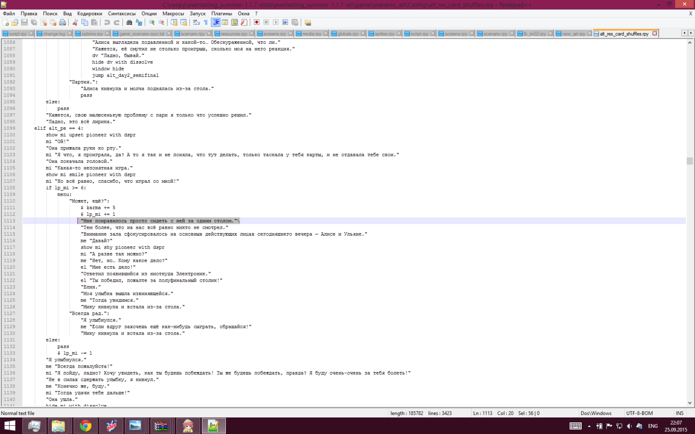

Если появляется окошко traceback
Страница 11 из 12 •  1, 2, 3 ... , 10, 11, 12
1, 2, 3 ... , 10, 11, 12
Re: Если появляется окошко traceback
автор 7dl-kun в Вт 28 Июл 2015 - 9:45

7dl-kun- Находка для шпиона

- Сообщения : 3026
Дата регистрации : 2014-09-07
Откуда : здесь столько наркоманов?
Re: Если появляется окошко traceback
автор Мурфин в Ср 29 Июл 2015 - 19:59
- Спойлер:
- I'm sorry, but an uncaught exception occurred.
While running game code:
File "C:/Program Files (x86)/Steam/steamapps/workshop/content/331470/441054187/scenario_alt/routes/alt_un_fz_route.rpy", line 4353, in script
scene bg int_mine_halt with dissolve
File "renpy/common/00library.rpy", line 83, in _default_empty_window
who = eval(who)
NameError: name 'opponent' is not defined
-- Full Traceback ------------------------------------------------------------
Full traceback:
File "C:\Program Files (x86)\Steam\steamapps\common\Everlasting Summer\renpy\bootstrap.py", line 288, in bootstrap
renpy.main.main()
File "C:\Program Files (x86)\Steam\steamapps\common\Everlasting Summer\renpy\main.py", line 434, in main
run(restart)
File "C:\Program Files (x86)\Steam\steamapps\common\Everlasting Summer\renpy\main.py", line 107, in run
renpy.execution.run_context(True)
File "C:\Program Files (x86)\Steam\steamapps\common\Everlasting Summer\renpy\execution.py", line 696, in run_context
context.run()
File "C:/Program Files (x86)/Steam/steamapps/workshop/content/331470/441054187/scenario_alt/routes/alt_un_fz_route.rpy", line 4353, in script
scene bg int_mine_halt with dissolve
File "C:\Program Files (x86)\Steam\steamapps\common\Everlasting Summer\renpy\ast.py", line 1236, in execute
renpy.exports.with_statement(trans, paired)
File "C:\Program Files (x86)\Steam\steamapps\common\Everlasting Summer\renpy\exports.py", line 1252, in with_statement
return renpy.game.interface.do_with(trans, paired, clear=clear)
File "C:\Program Files (x86)\Steam\steamapps\common\Everlasting Summer\renpy\display\core.py", line 1850, in do_with
self.with_none()
File "C:\Program Files (x86)\Steam\steamapps\common\Everlasting Summer\renpy\display\core.py", line 1868, in with_none
self.show_window()
File "C:\Program Files (x86)\Steam\steamapps\common\Everlasting Summer\renpy\display\core.py", line 1842, in show_window
renpy.config.empty_window()
File "renpy/common/00library.rpy", line 83, in _default_empty_window
who = eval(who)
File "C:\Program Files (x86)\Steam\steamapps\common\Everlasting Summer\renpy\python.py", line 1483, in py_eval
return eval(py_compile(source, 'eval'), globals, locals)
File "<none>", line 1, in <module>
NameError: name 'opponent' is not defined
Windows-8-6.2.9200
Ren'Py 6.99.4.467
Everlasting Summer 1.2
А, понял в чем дело... но вот как пофиксить

Мурфин- Сыч

- Сообщения : 55
Дата регистрации : 2015-06-12
Re: Если появляется окошко traceback
автор Imperfect Machine в Пт 31 Июл 2015 - 20:19
I'm sorry, but an uncaught exception occurred.
While running game code:
File "game/scenario_alt/alt_day2.rpy", line 6309, in script
File "game/scenario_alt/alt_day2.rpy", line 6309, in python
File "game/scenario_alt/res/alt_res_map.rpy", line 441, in python
File "game/scenario_alt/res/alt_res_map.rpy", line 350, in python
KeyError: 'error'
-- Full Traceback ------------------------------------------------------------
Full traceback:
File "H:\Downloads\everlasting_summer-1.1\everlasting_summer-1.1\renpy\bootstrap.py", line 265, in bootstrap
renpy.main.main()
File "H:\Downloads\everlasting_summer-1.1\everlasting_summer-1.1\renpy\main.py", line 327, in main
run(restart)
File "H:\Downloads\everlasting_summer-1.1\everlasting_summer-1.1\renpy\main.py", line 78, in run
renpy.execution.run_context(True)
File "H:\Downloads\everlasting_summer-1.1\everlasting_summer-1.1\renpy\execution.py", line 509, in run_context
context.run()
File "H:\Downloads\everlasting_summer-1.1\everlasting_summer-1.1\renpy\execution.py", line 288, in run
node.execute()
File "H:\Downloads\everlasting_summer-1.1\everlasting_summer-1.1\renpy\ast.py", line 1486, in execute
if renpy.python.py_eval(condition):
File "H:\Downloads\everlasting_summer-1.1\everlasting_summer-1.1\renpy\python.py", line 1338, in py_eval
return eval(py_compile(source, 'eval'), globals, locals)
File "game/scenario_alt/alt_day2.rpy", line 6309, in <module>
if been_there_alt2()>1:
File "game/scenario_alt/res/alt_res_map.rpy", line 441, in been_there_alt2
return store.map_alt2.been_there()
File "game/scenario_alt/res/alt_res_map.rpy", line 350, in been_there
return global_zones_alt2[global_map_result_alt2]["been_here"]
KeyError: 'error'
Windows-2003Server-5.2.3790-SP2
Ren'Py 6.16.3.502
Everlasting Summer 1.0

Imperfect Machine- Ньюфаг

- Сообщения : 6
Дата регистрации : 2015-07-31
Re: Если появляется окошко traceback
автор openplace в Пт 31 Июл 2015 - 22:06

openplace- Хикка

- Сообщения : 111
Дата регистрации : 2015-05-02
Re: Если появляется окошко traceback
автор Imperfect Machine в Сб 1 Авг 2015 - 4:52
Imperfect Machine- Ньюфаг
- Сообщения : 6
Дата регистрации : 2015-07-31
Re: Если появляется окошко traceback
автор Chess в Сб 1 Авг 2015 - 5:10
Переустанови игру унд мод с фиксами - гарантированно поможет.

Chess- Находка для шпиона
- Сообщения : 3798
Дата регистрации : 2014-10-05
Откуда : Город на краю света
Re: Если появляется окошко traceback
автор 7dl-kun в Сб 1 Авг 2015 - 11:37
7dl-kun- Находка для шпиона
- Сообщения : 3026
Дата регистрации : 2014-09-07
Откуда : здесь столько наркоманов?
Re: Если появляется окошко traceback
автор Imperfect Machine в Сб 1 Авг 2015 - 14:54
А может "плавающая" ошибка? Ну, возникает только при некоторых условиях.
Imperfect Machine- Ньюфаг
- Сообщения : 6
Дата регистрации : 2015-07-31
Re: Если появляется окошко traceback
автор nuttyprof в Сб 1 Авг 2015 - 16:07
7dl-kun пишет: Подтверждаю, ошибка с погоней от Алисы по карте во втором дне присутствует. Не знаю, как это решать, поэтому просто уберу чек был/не был и сразу деактивирую зону.
Imperfect Machine пишет: Ошибка появилась во время турнира после проигрыша Ульяне и выбора "Да в чём дело-то?!".
I'm sorry, but an uncaught exception occurred.
Imperfect Machine пишет:А может "плавающая" ошибка? Ну, возникает только при некоторых условиях.
- Там дело в том, что:
со строки 6024 (только для Локи, jump alt_day2_eventEv_beach
мы переходим на строку 6308 (label alt_day2_eventEv_beach:), без подготовки зон карты; после строки 6308 идет проверка: были ли мы уже на пляже (а пляж еще не активирован) - она ошибку и дает; надо этот блок проверки обойти в этом случае.
Во всех остальных случаях (вроде бы) - мы на пляж попадаем через подготовку зон карты.
Со строки 6024 переходить надо по новой метке на строку 6317 (или ниже чуть, все равно условие в 6317 выполняется),
Отключение зоны в строке 6384 ($ disable_current_zone_alt2() ) лишнее - ( если alt_day2_dv_chased:, то мы и так зону пляжа не включаем в подготовке карты.)

nuttyprof- Хикка
- Сообщения : 102
Дата регистрации : 2015-05-25
Возраст : 45
Откуда : Юг
Re: Если появляется окошко traceback
автор BlackDoomer в Пн 3 Авг 2015 - 20:56
- Вылет:
- While running game code:
File "game/scenario_alt/routes/alt_zneutral_route.rpy", line 3901, in script
SyntaxError: invalid syntax (game/scenario_alt/routes/alt_zneutral_route.rpy, line 3901)
-- Full Traceback ------------------------------------------------------------
Full traceback:
File "D:\Games\[Soviet Games] Everlasting Summer 1.1.6\renpy\execution.py", line 288, in run
node.execute()
File "D:\Games\[Soviet Games] Everlasting Summer 1.1.6\renpy\ast.py", line 965, in execute
show_imspec(self.imspec, atl=getattr(self, "atl", None))
File "D:\Games\[Soviet Games] Everlasting Summer 1.1.6\renpy\ast.py", line 930, in show_imspec
at_list = [ renpy.python.py_eval(i) for i in at_list ]
File "D:\Games\[Soviet Games] Everlasting Summer 1.1.6\renpy\python.py", line 1338, in py_eval
return eval(py_compile(source, 'eval'), globals, locals)
File "D:\Games\[Soviet Games] Everlasting Summer 1.1.6\renpy\python.py", line 450, in py_compile
raise e
SyntaxError: invalid syntax (game/scenario_alt/routes/alt_zneutral_route.rpy, line 3901)

BlackDoomer- Хикка
- Сообщения : 165
Дата регистрации : 2015-07-31
Откуда : СПб
7dl-kun- Находка для шпиона
- Сообщения : 3026
Дата регистрации : 2014-09-07
Откуда : здесь столько наркоманов?
Re: Если появляется окошко traceback
автор Phoenix1 в Сб 8 Авг 2015 - 5:01
Выдаёт такое:
- Спойлер:
- I'm sorry, but an uncaught exception occurred.
While running game code:
File "game/mods/scenario_alt/alt_day1.rpy", line 173, in script
$ renpy.pause(3, hard=True)
File "game/mods/scenario_alt/alt_day1.rpy", line 173, in <module>
$ renpy.pause(3, hard=True)
IOError: Couldn't find file 'images/1080/bg/semen_room.jpg'.
-- Full Traceback ------------------------------------------------------------
Full traceback:
File "E:\Program files\Бесконечное лето\everlasting_summer-1.2-all\renpy\bootstrap.py", line 289, in bootstrap
renpy.main.main()
File "E:\Program files\Бесконечное лето\everlasting_summer-1.2-all\renpy\main.py", line 357, in main
run(restart)
File "E:\Program files\Бесконечное лето\everlasting_summer-1.2-all\renpy\main.py", line 77, in run
renpy.execution.run_context(True)
File "E:\Program files\Бесконечное лето\everlasting_summer-1.2-all\renpy\execution.py", line 598, in run_context
context.run()
File "game/mods/scenario_alt/alt_day1.rpy", line 173, in script
$ renpy.pause(3, hard=True)
File "E:\Program files\Бесконечное лето\everlasting_summer-1.2-all\renpy\ast.py", line 785, in execute
renpy.python.py_exec_bytecode(self.code.bytecode, self.hide, store=self.store)
File "E:\Program files\Бесконечное лето\everlasting_summer-1.2-all\renpy\python.py", line 1382, in py_exec_bytecode
exec bytecode in globals, locals
File "game/mods/scenario_alt/alt_day1.rpy", line 173, in <module>
$ renpy.pause(3, hard=True)
File "E:\Program files\Бесконечное лето\everlasting_summer-1.2-all\renpy\exports.py", line 1127, in pause
rv = renpy.ui.interact(mouse='pause', type='pause', roll_forward=roll_forward)
File "E:\Program files\Бесконечное лето\everlasting_summer-1.2-all\renpy\ui.py", line 247, in interact
rv = renpy.game.interface.interact(roll_forward=roll_forward, **kwargs)
File "E:\Program files\Бесконечное лето\everlasting_summer-1.2-all\renpy\display\core.py", line 2149, in interact
repeat, rv = self.interact_core(preloads=preloads, **kwargs)
File "E:\Program files\Бесконечное лето\everlasting_summer-1.2-all\renpy\display\core.py", line 2478, in interact_core
self.draw_screen(root_widget, fullscreen_video, (not fullscreen_video) or video_frame_drawn)
File "E:\Program files\Бесконечное лето\everlasting_summer-1.2-all\renpy\display\core.py", line 1677, in draw_screen
renpy.config.screen_height,
File "render.pyx", line 363, in renpy.display.render.render_screen (gen\renpy.display.render.c:5330)
File "render.pyx", line 174, in renpy.display.render.render (gen\renpy.display.render.c:2537)
File "E:\Program files\Бесконечное лето\everlasting_summer-1.2-all\renpy\display\layout.py", line 618, in render
surf = render(child, width, height, cst, cat)
File "render.pyx", line 98, in renpy.display.render.render (gen\renpy.display.render.c:2849)
File "render.pyx", line 174, in renpy.display.render.render (gen\renpy.display.render.c:2537)
File "E:\Program files\Бесконечное лето\everlasting_summer-1.2-all\renpy\display\layout.py", line 618, in render
surf = render(child, width, height, cst, cat)
File "render.pyx", line 98, in renpy.display.render.render (gen\renpy.display.render.c:2849)
File "render.pyx", line 174, in renpy.display.render.render (gen\renpy.display.render.c:2537)
File "E:\Program files\Бесконечное лето\everlasting_summer-1.2-all\renpy\display\layout.py", line 618, in render
surf = render(child, width, height, cst, cat)
File "render.pyx", line 98, in renpy.display.render.render (gen\renpy.display.render.c:2849)
File "render.pyx", line 174, in renpy.display.render.render (gen\renpy.display.render.c:2537)
File "accelerator.pyx", line 108, in renpy.display.accelerator.transform_render (gen\renpy.display.accelerator.c:1922)
File "render.pyx", line 174, in renpy.display.render.render (gen\renpy.display.render.c:2537)
File "E:\Program files\Бесконечное лето\everlasting_summer-1.2-all\renpy\display\image.py", line 207, in render
return wrap_render(self.target, width, height, st, at)
File "E:\Program files\Бесконечное лето\everlasting_summer-1.2-all\renpy\display\image.py", line 82, in wrap_render
rend = render(child, w, h, st, at)
File "render.pyx", line 98, in renpy.display.render.render (gen\renpy.display.render.c:2849)
File "render.pyx", line 174, in renpy.display.render.render (gen\renpy.display.render.c:2537)
File "accelerator.pyx", line 108, in renpy.display.accelerator.transform_render (gen\renpy.display.accelerator.c:1922)
File "render.pyx", line 174, in renpy.display.render.render (gen\renpy.display.render.c:2537)
File "E:\Program files\Бесконечное лето\everlasting_summer-1.2-all\renpy\display\im.py", line 465, in render
im = cache.get(self)
File "E:\Program files\Бесконечное лето\everlasting_summer-1.2-all\renpy\display\im.py", line 198, in get
surf = image.load()
File "E:\Program files\Бесконечное лето\everlasting_summer-1.2-all\renpy\display\im.py", line 509, in load
surf = renpy.display.pgrender.load_image(renpy.loader.load(self.filename), self.filename)
File "E:\Program files\Бесконечное лето\everlasting_summer-1.2-all\renpy\loader.py", line 438, in load
raise IOError("Couldn't find file '%s'." % name)
IOError: Couldn't find file 'images/1080/bg/semen_room.jpg'.
Windows-7-6.1.7601-SP1
Ren'Py 6.18.3.761
Everlasting Summer 1.2
Upd: Решил добавлением соответствующих файлов в папку \game\images
Phoenix1- Ньюфаг
- Сообщения : 1
Дата регистрации : 2015-08-06
Re: Если появляется окошко traceback
автор 2chevsk↯ в Чт 17 Сен 2015 - 20:12
Собирал сборочку, словил трейс.
- Спойлер:
- I'm sorry, but an uncaught exception occurred.
While executing init code:
File "game/scenario_alt/Config/alt_res_map.rpy", line 26, in script
File "game/scenario_alt/Config/alt_res_map.rpy", line 29, in python
NameError: name 'bg_tmp_image' is not defined
-- Full Traceback ------------------------------------------------------------
Full traceback:
File "C:\Games\Everlasting Summer\renpy\bootstrap.py", line 265, in bootstrap
renpy.main.main()
File "C:\Games\Everlasting Summer\renpy\main.py", line 263, in main
game.context().run(node)
File "C:\Games\Everlasting Summer\renpy\execution.py", line 288, in run
node.execute()
File "C:\Games\Everlasting Summer\renpy\ast.py", line 720, in execute
renpy.python.py_exec_bytecode(self.code.bytecode, self.hide, store=self.store)
File "C:\Games\Everlasting Summer\renpy\python.py", line 1304, in py_exec_bytecode
exec bytecode in globals, locals
File "game/scenario_alt/Config/alt_res_map.rpy", line 29, in <module>
"me_mt_house_alt1": {"position":[960,178,992,227],"default_bg":bg_tmp_image(u"Мой домик")},
NameError: name 'bg_tmp_image' is not defined

2chevsk↯- Ньюфаг
- Сообщения : 13
Дата регистрации : 2015-05-31
Re: Если появляется окошко traceback
автор Chess в Чт 17 Сен 2015 - 20:28
Chess- Находка для шпиона
- Сообщения : 3798
Дата регистрации : 2014-10-05
Откуда : Город на краю света
Re: Если появляется окошко traceback
автор 2chevsk↯ в Чт 17 Сен 2015 - 20:31
Если бы забыл - ошибка была бы другая. А так это фейл в alt_res_map.rpy.Chess пишет:А папку scenario_alt перед обновой удалить не забыл?
2chevsk↯- Ньюфаг
- Сообщения : 13
Дата регистрации : 2015-05-31
Re: Если появляется окошко traceback
автор Chess в Чт 17 Сен 2015 - 20:58
Chess- Находка для шпиона
- Сообщения : 3798
Дата регистрации : 2014-10-05
Откуда : Город на краю света
Re: Если появляется окошко traceback
автор 7dl-kun в Чт 17 Сен 2015 - 21:02
Смотри что у тебя там непотребствами занимается.
7dl-kun- Находка для шпиона
- Сообщения : 3026
Дата регистрации : 2014-09-07
Откуда : здесь столько наркоманов?
Re: Если появляется окошко traceback
автор 2chevsk↯ в Чт 17 Сен 2015 - 21:25
Попробую на чистом заново собрать.7dl-kun пишет:бг_тмп объявляется не в моде, мод этим вообще не занимается, по большому счёту, за этот отвечает media.rpyc
Смотри что у тебя там непотребствами занимается.
2chevsk↯- Ньюфаг
- Сообщения : 13
Дата регистрации : 2015-05-31
Re: Если появляется окошко traceback
автор 2chevsk↯ в Чт 24 Сен 2015 - 20:43
2chevsk↯- Ньюфаг
- Сообщения : 13
Дата регистрации : 2015-05-31
Re: Если появляется окошко traceback
автор 7dl-kun в Чт 24 Сен 2015 - 21:16
На 1113 строке чего? Екзешника? (=2chevsk↯ пишет:Призываю человека с вилкой. В последней сборке кажется на 1113 строке забыли "\" убрать.
7dl-kun- Находка для шпиона
- Сообщения : 3026
Дата регистрации : 2014-09-07
Откуда : здесь столько наркоманов?
Re: Если появляется окошко traceback
автор Chess в Чт 24 Сен 2015 - 21:54
- Элдхен, что за...:
- File "D:\SteamLibrary\steamapps\common\Everlasting Summer\renpy\python.py", line 1483, in py_eval
return eval(py_compile(source, 'eval'), globals, locals)
File "D:/SteamLibrary/steamapps/workshop/content/331470/441054187/scenario_alt/Scenario/WIP/queue/alt_route_uv.rpy", line 1204, in <module>
if alt_uvao_D4_viola_morning and alt_day0_prologue:
NameError: name 'alt_day0_prologue' is not defined
Chess- Находка для шпиона
- Сообщения : 3798
Дата регистрации : 2014-10-05
Откуда : Город на краю света
Re: Если появляется окошко traceback
автор 2chevsk↯ в Пт 25 Сен 2015 - 9:23
Конфига7dl-kun пишет:На 1113 строке чего? Екзешника? (=2chevsk↯ пишет:Призываю человека с вилкой. В последней сборке кажется на 1113 строке забыли "\" убрать.
2chevsk↯- Ньюфаг
- Сообщения : 13
Дата регистрации : 2015-05-31
Re: Если появляется окошко traceback
автор 2chevsk↯ в Пт 25 Сен 2015 - 20:08
- Спойлер:

2chevsk↯- Ньюфаг
- Сообщения : 13
Дата регистрации : 2015-05-31
Re: Если появляется окошко traceback
автор Chess в Пт 25 Сен 2015 - 20:09
Chess- Находка для шпиона
- Сообщения : 3798
Дата регистрации : 2014-10-05
Откуда : Город на краю света
Re: Если появляется окошко traceback
автор Элдхэнн в Сб 26 Сен 2015 - 2:36

Элдхэнн- Людовед

- Сообщения : 1002
Дата регистрации : 2015-03-30
Возраст : 38
Откуда : Москва
Страница 11 из 12 • 1, 2, 3 ... , 10, 11, 12